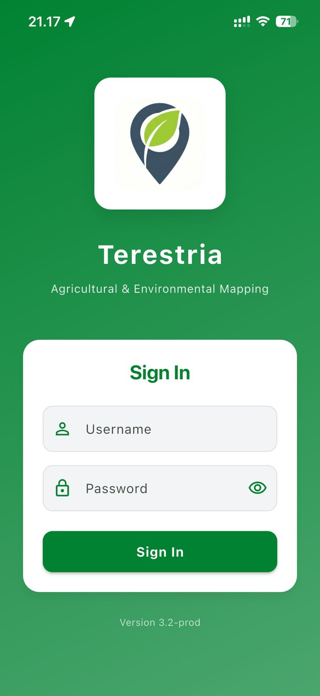
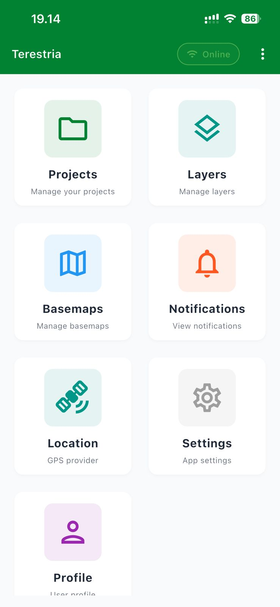
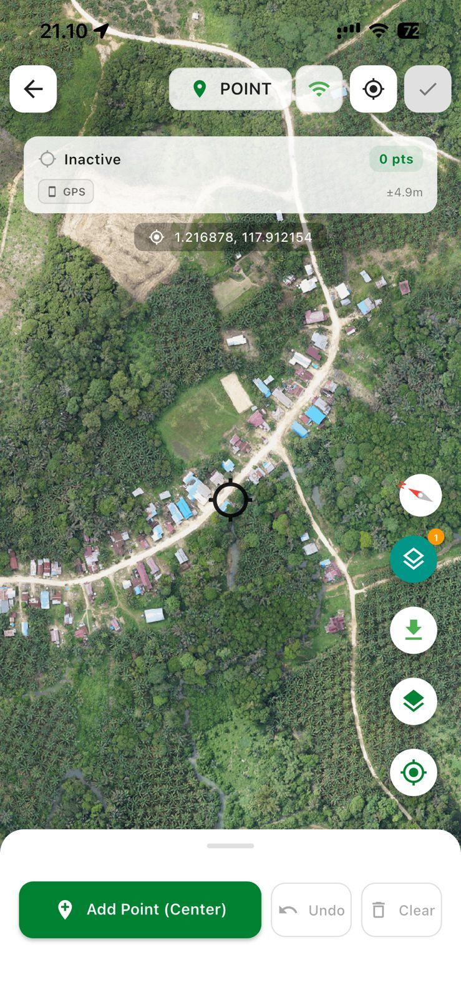
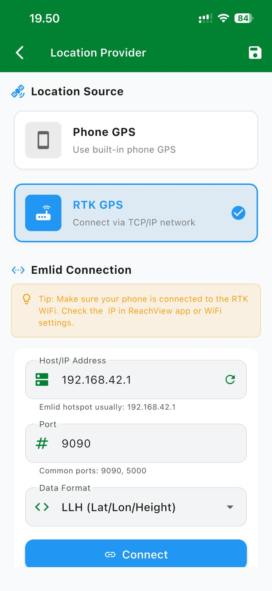
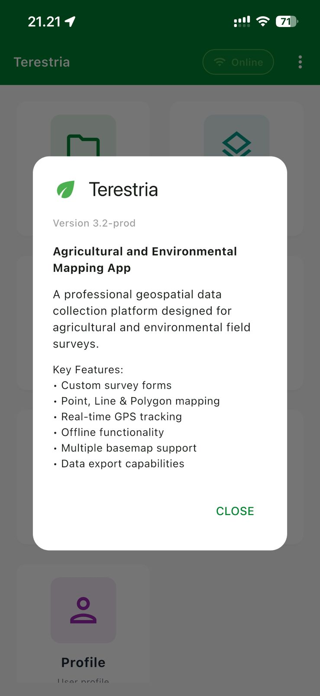
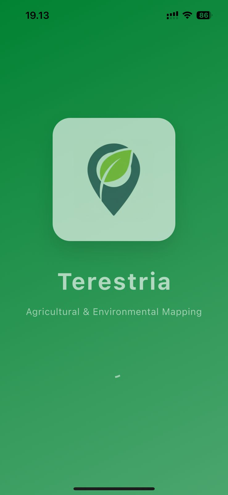
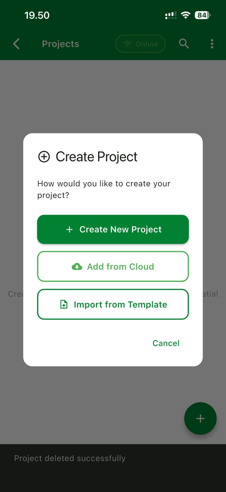
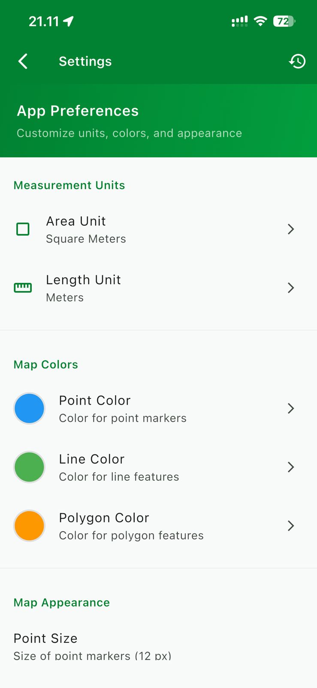

// Mobile GIS · Offline-First · RTK Ready
Professional mobile mapping application for field geospatial data collection — point, line, polygon, photos, and attributes all in one platform.





Every feature is purpose-built for real field conditions — rough terrain, limited connectivity, and high-precision requirements.
Create points, lines, and polygons directly on the map with real-time GPS coordinate accuracy in the field.
Dynamic forms that can be customized per layer and per project to match your survey requirements.
Field photos automatically attach to map features with GPS coordinates and timestamp metadata.
Supports custom TMS and WMS sources. Tile caching for full offline operation without internet.
Integrates with external RTK GPS receivers via TCP/IP (Emlid, etc.) for centimeter-level accuracy.
Full control over when data is sent to the server. No automatic sync — you decide when to push.
Actual screenshots from Terestria running in the field.



Terestria displays high-resolution satellite imagery as basemap. Add points, lines, and polygons precisely using a centered crosshair, with real-time GPS information and accuracy readout.
Access to Terestria is granted through a manual credential request process. Each user signs in with a verified username and password issued by the app developer — ensuring the platform is used only by authorized survey teams.
Beyond the phone's built-in GPS, Terestria connects to RTK geodetic receivers (like Emlid Reach) via TCP/IP network. Achieve sub-centimeter position accuracy for high-precision survey requirements.
Organize every survey into separate projects. Create a new project from scratch, pull from the cloud, or import from a template. Each project has its own layer configuration, attribute forms, and basemap settings.
Each app update comes with an in-app release dialog showing the version number and key features. Terestria v3.2-prod includes custom survey forms, point/line/polygon mapping, real-time GPS tracking, offline functionality, multiple basemap support, and data export capabilities.
Customize measurement units for area and distance, set individual colors for each feature type (point, line, polygon), and configure map appearance to match your team's field standards.
Create projects, invite team members, and coordinate field data collection in a structured, controlled environment.
Each survey is organized into a project with its own layer configuration and attribute forms. Admins have full control over project settings and data.
Add surveyors to a project. Each team member can access, collect, and upload data according to the role assigned by the project admin.
The entire data collection workflow runs without an internet connection. All data is stored locally on the device and can be synced when connectivity is available.
No automatic sync. Users have full control over when and which data is sent to the server — aligned with your field workflow.
Terestria is a purpose-built application with no ads and no subscriptions. Every user is verified directly by the developer.
Contact the app developer with the following information for the verification process: